编程
by Spencer Tiberi
Introduction
- David plays a game called Oscartime that was the first Scratch program he created
- Scratch is a graphical 编程 language created by MIT’s Lifelong Kindergarten Group
- The language not only helps get kids excited 关于 编程, but it’s also very instructive
Software
- Programing is ultimately 关于 making software
- Software is what runs on our hardware
- Could run on a desktop, or 电话, etc.
- Software is what runs on our hardware
Finding Mike Smith
- Code is just a technical implementation of 算法
- 算法 are step by step instructions for solving 问题
- Consider a phonebook full of thousands of names and 电话 numbers
- How do we lookup someone like Mike Smith?
- We could 开始 在 the first page, move to the 下一页, and so on until we find him
- 这是 a correct algorithm, as we will find Mike Smith eventually
- However, it’s inefficient
- We could 开始 在 the first page and count by 2s
- I would find Mike Smith twice as quickly
- However, this alone is not correct as we could miss Mike Smith if his 姓名 is sandwiched between two pages
- We could fix this by checking the 上一页 page if we go past where Mike Smith should be
- We could 开始 在 the first page, move to the 下一页, and so on until we find him
- 更多 likely, we’d probably go to the middle of the phonebook and find ourselves in the “M” 小组课
- As Smith is after M, he must be in the latter (right) half of the book
- We can ignore the other half
- After removing the other half, we are left with half of the book, representing the same 问题 we started with fundamentally
- We can keep repeating this process until we’re down to one page with Mike’s number on it
- This leverages the fact that the book is sorted alphabetically
- We are deviding and conquering
- 1000 pages → 500 pages → 250 pages → 125 pages…
- As Smith is after M, he must be in the latter (right) half of the book
Phonebook Algorithm
1 pick up phone book
2 open to middle of phone book
3 look at names
4 if Smith is among names
5 call Mike
6 else if Smith is earlier in book
7 open to middle of left half of book
8 go back to step 3
9 else if Smith is later in book
10 open to middle of right half of book
11 go back to step 3
12 else
13 quit
Pseudocode
- This 示例 algorithm is code, not written in a 编程 language, but rather English
- 这是 called Pseudocode
- Code-like syntax written in English
- Numbered lines to maintain order and reference lines
pick up,open to,look at,call,open, andgo backare functionsif,if else, andelseare conditionsSmith is among names,Smith is earlier in book, andSmith is later in bookare Boolean expressions- Can be either true or false
- If these are true, the indented code below is executed
- Both line 8 and 11 say to go 返回 to step 3
- This creates a loop
- Doing the sane thing again and again
- This creates a loop
编程 Constructs
- These constructs of loops, Boolean expressions, functions, and conditions as well as others such as variables, threads, events, and 更多 are common across all 编程 languages
C
- C is one of the oldest 编程 languages that someone might still write in
#include <stdio.h>
int main(void)
{
printf("hello, world/n");
}
- Some of this syntax 五月 look cryptic, but you can likely guess what it does
- It prints “你好, 世界” to the screen
- The other details can be learned
- Just like with written human languages that are foreign, you just haven’t learned the patterns yet
- Many 编程 languages have similarities, so it becomes easier to learn 新内容 ones with knowledge under your belt
- Ultimately, 编程 is 关于 writhing software to control hardware to solve a 问题
- However, computers only understand binary (0’s and 1’s)
- 源代码 what we humans write and it can be converted into machine code (0’s and 1’s)
- 这是 achieved by using a program called a compiler
- This allows a human to write the code and a machine to 阅读 and run it
- 源代码 what we humans write and it can be converted into machine code (0’s and 1’s)
C++
#include <iostream>
int main()
{
std::out << "hello, world" << std::endl;
}
- This program written in C++ still prints “你好, 世界”
- Many 编程 languages do the same things differently
- We can solve the same 问题 using any different number of languages
- It could be easier to use one 编程 language for a specific 问题
- Different languages were invented to tackle different kinds of 问题
Python
print("hello, world")
- Straightforwardly, this prints “你好, 世界”
- Python is a different type of language as you don’t type 源代码 and manually convert it into machine code
- A special program called an interpreter converts the 源代码 into an intermediate language called byte code
- Which is not machine code (0’s and 1’s)
2 0 LOAD_GLOBAL 0 (print) 3 LOAD_CONST 1 ('hello, world') 6 CALL_FUNCTION 1 (1 positional, 0 keyword pair) 9 POP_TOP 10 LOAD_CONST 0 (None) 13 RETURN_VALUE- The interpreter reads this one line 在 a 时间
- A special program called an interpreter converts the 源代码 into an intermediate language called byte code
- The takeaway from 这是 that there different ways of doing the same thing in many different languages
- And languages get used in different ways!
- Sometimes you need to compile code, sometimes you need to interpret code
- 在 the 结束 of the day, the consumer interacts with the software in the same way
- They don’t need to know what language it’s written in as long is it run on their computer
- Programs are often packaged differently for different operating systems
- They don’t need to know what language it’s written in as long is it run on their computer
Other 编程 Language
-
Java
class Hello { public static void main(String [] args) { System.out.println("hello, world"); } } -
Ruby
put "hello, world" -
Lisp
(print "hello, world") -
JavaScript
console.log("hello, world")
Introducing Scratch
- Each of these languages have a lot 更多 features, but they have commonalities
- Functions, loops, conditions, Boolean expressions, variables, threads, etc.
- To focus on these ideas in a graphical manner, we’ll explore Scratch
- In the earlier Oscartime 示例, trash was moving down the screen
- A screen is just a grid of pixels
- To make animation, we move an image on it slightly
- If done quickly, it looks like movement
- To make the trash stop 在 the bottom of the screen, we use some Boolean expression and condition
- “If you’re touching the bottom of the screen, stop moving”
- Or “Only if you’re not touching the bottom of the screen, keep moving”
- When trash is put in the can, the lid lifts and Oscar counts the pieces of trash disposed of
- The sprite for Oscar is using a variable
- Initialized (set initially) to 0
- Increments (adds 1 to the variable) for each piece of trash
- A condition is also used here
- “If a piece of trash is added, then increment the variable for trash pieces”
- The sprite for Oscar is using a variable
- The music was playing in some kind of loop
- Even though this program is complex enough to take 8 时间 to make, it’s ultimately built with the same fundamental building blocks of conditions, loops, etc.
你好, 世界 in Scratch
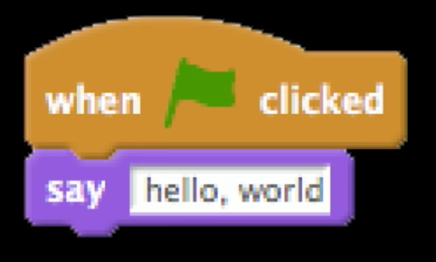
- 这是 how we say “你好, 世界” in Scratch
- By default, a graphical cat will preform this code
- Can change the cat into other things
- By default, a graphical cat will preform this code
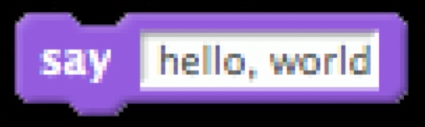
- 这是 the function for say
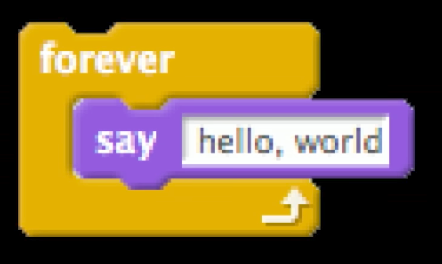
- This says “你好, 世界” forever
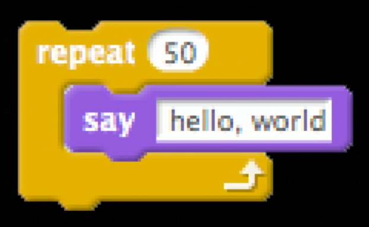
- This says “你好, 世界” 50 times
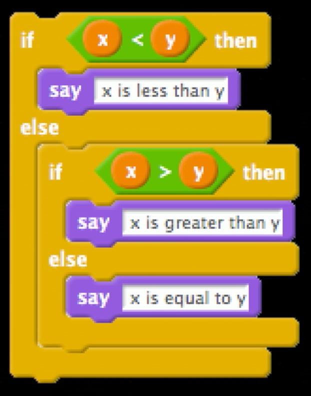
- 这是 an 示例 of how to specify things conditionally
- Scratch allow you to programing by piecing together puzzle pieces with shapes that imply what to do
- We can put an if else inside another if else
- The green blocks are Boolean Expressions
Scratch Interface
- Scratch is not only a language but a 编程 environment as well
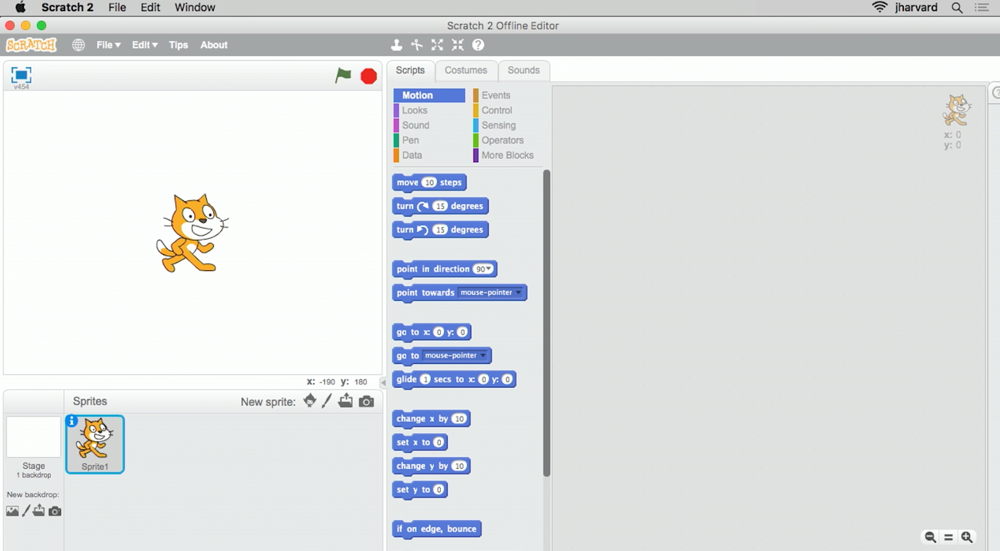
- On the left is Scratch the cat in a 2D 世界 with height and width
- Can change 背景 and 更多 sprites to this 世界
- In the middle are palettes containing scripts
- Blue are motion blocks
- In the costumes tab we can change aesthetics
- The sounds tab can introduces sounds and multimedia
- The blank slate on the right is where we can drag and drop the puzzle pieces and connect them in order to instruct Scratch to do things
when green flag clickedis equivalent to the 开始 of your program- The green flag button starts, the red stop sign button ends
- When we drag blocks together, the edge of the block glows white to signify they connect
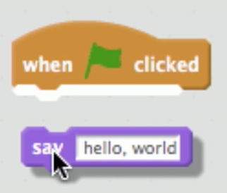
- The 你好, 世界 Scratch program won’t stop until we click the red stop sign as we never told Scratch to stop in the script
Sounds
- We can also add sounds
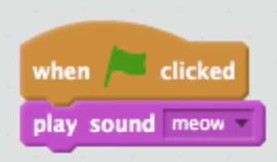
Loops
- If we want Scratch to do something repeatedly, we can use loops
- Can move the sound into a repeat block
- The containing block will grow to fit
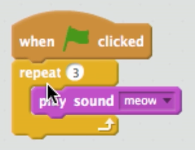
- This seems to only ply the meow once
- The sound repeats so quickly they overlap
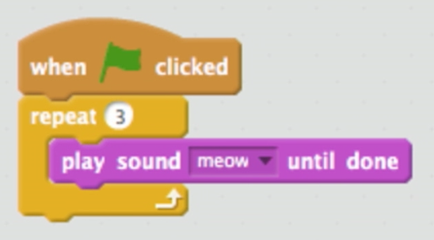
- This one plays the sound until done before the 下一页 cycle in the loop
- The containing block will grow to fit
- Can move the sound into a repeat block
- This processes was an 示例 of a common and frustrating experience when 编程: bugs
Animation
- I want the cat to move 返回 and forth forever
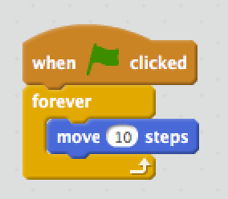
- This moves the Scratch the cat forward (to the right) until he hits the edge
- If we drag the cat 返回, he’ll keep moving forward
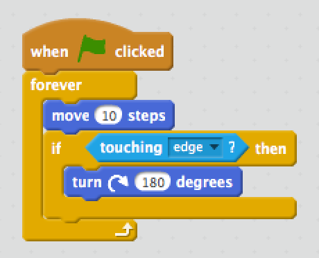
- Scratch will now rotate 180° if touching the edge of the screen
- But Scratch is flipping upside down (literally rotating 180°)
- Another bug!
- But Scratch is flipping upside down (literally rotating 180°)
- We can record custom sounds under the sounds tab and add it
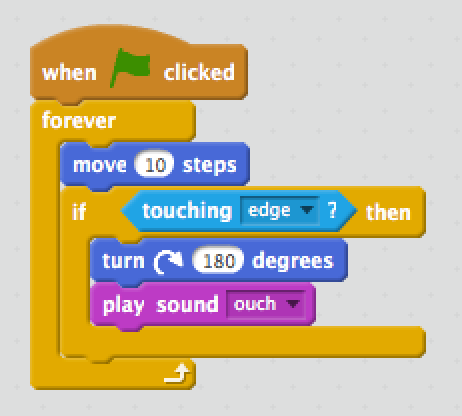
Breaking Down 问题
- Its much easier to write complex programs if you 开始 out by breaking them down into their component parts
- Consider individual milestones for yourself
- Even companies like MS didn’t create Word in a day
- Software developers make one small feature 在 a 时间
- Eventually, this becomes millions of lines of code
pet the cat
- Reading and understanding code is another side of software development
- Teams need to do this to collaborate
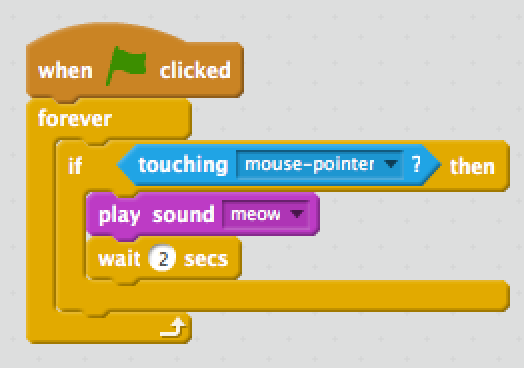
- When this program starts, nothing happens until the mouse pointer touches the cat, in which the cat meows
don’t pet the cat
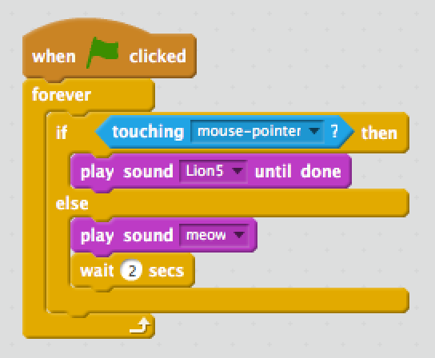
- This script has an
if else - Will play a lion’s roar if the mouse pointer touches the cat, but will meow and wait 2 seconds if not
counting sheep
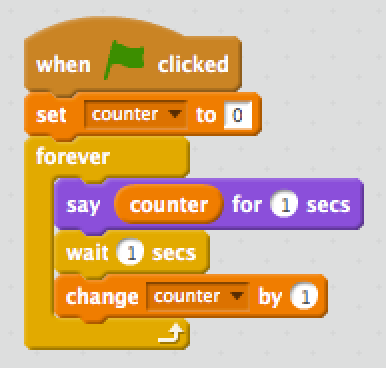
- This first sets a variable called
counterto 0 - It will forever say counter for 1 second, wait one second, then increment the counter
- Ultimately, this will count forever
cough0
- We can create our own puzzle pieces
- We can do this in most 编程 languages
- Where we create functions
- In Scratch we can utilize the functionality of existing puzzle pieces
- We can do this in most 编程 languages
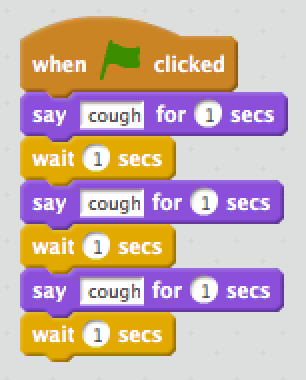
- There is an opportunity for better design here
- IT looks like we’ve copied and pasted puzzle pieces
cough1
- We can improve this with loops
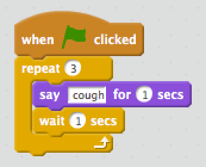
- Better design as we can change what the cat is saying or the wait 时间 in one place
cough2
- What if I just want a puzzle piece to make any sprite cough?
- Gain the ability to share the functionality to use elsewhere
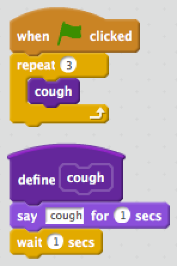
- We’ve defined a 新内容 block called
cough- We repeat
cough3 times, abstracting away the complexity
- We repeat
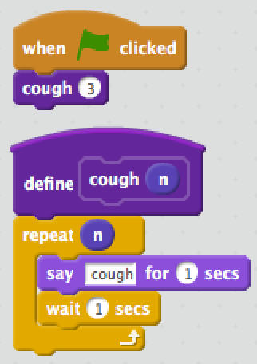
- We can go even further by passing in a value to your custom block
- This value is called an argument or parameter
- For 示例, the say block takes in an argument of “你好, 世界” or some other phrase
- This value is called an argument or parameter
- Whatever the user passed into
coughwill replace n! - The evolution of this program is an 示例 of what it’s like to program and solve 问题
- There were opportunities to improve from a correct yet poor design
- To be good 在 编程 is to be able to notice opportunities like this
Threads
- In Scratch, we can have multiple sprites, each with their own scripts
- Two things will happen simultaneously, called threads
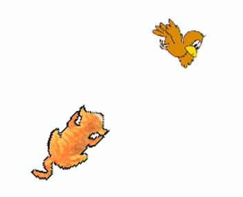
- This program has a cat chasing a bird
- Here’s what guides the bird:
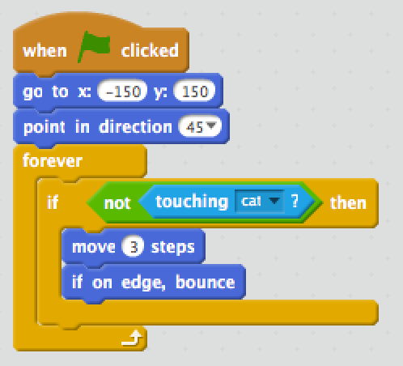
- 地点 in the 世界 can be addressed with coordinates
- Will keep moving around if not touching the cat
- Here’s what guides the cat:
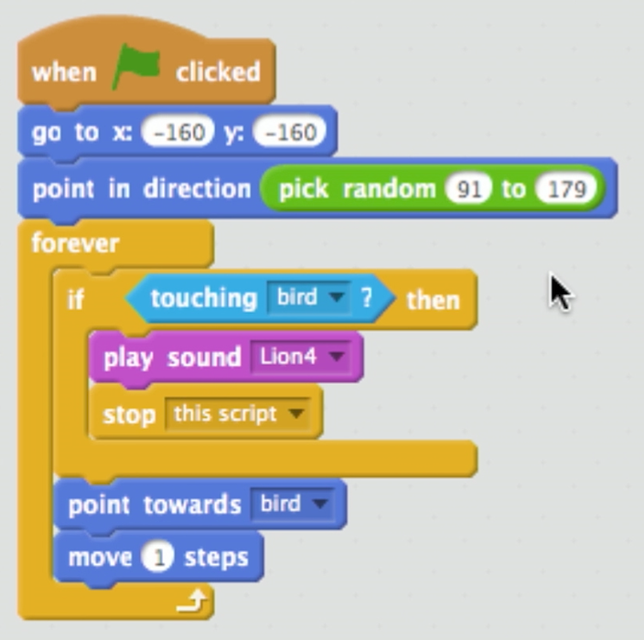
- The cat will point in a random direction
- Forever checks if touching the bird and moves towards the bird
- If touching the bird, a lion’s roar will play and the script will stop
- If we increase the movement speed of the bird to 6 steps, it still gets caught
- If we increase the movement speed of the cat to 10 steps, the bird stands no chance!
Events
- A computer can do multiple things 在 a 时间 截止 to multithreading
- Now that computers have multiple cores, they can literally do two things 在 once
- However, computers are so fast that even if two things are technically not happening 在 the same 时间, we can’t notice the difference
- These threads can also intercommunicate in Scratch with events
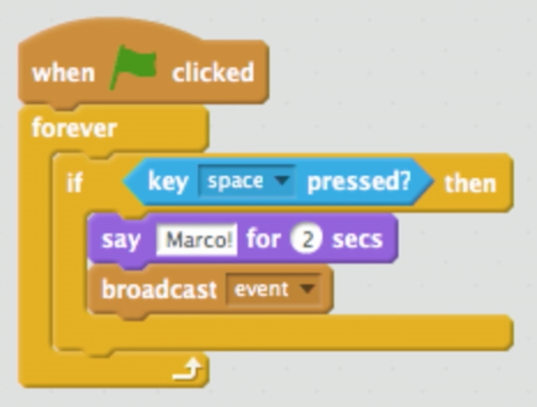
- This sprite (an orange puppet) will forever check for the spacebar being pressed
- If this happens, the sprite will say “Marco!” for 2 seconds and broadcast
event- Events are messages only the computer can hear
- If another sprite is configured to listed for
eventit can respond
- If another sprite is configured to listed for
- Events are messages only the computer can hear
- If this happens, the sprite will say “Marco!” for 2 seconds and broadcast
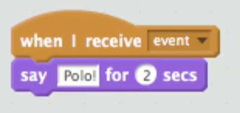
- This sprite will say “Polo!” for 2 seconds if it hears
event
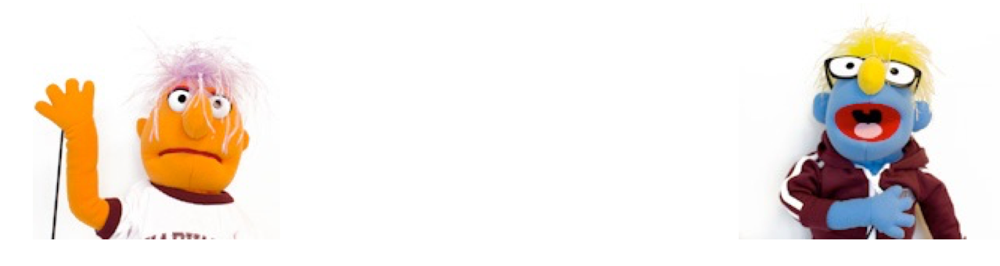
- When the green flag is clicked, the orange puppet will wait for the spacebar and then tell the other sprite when to say “Polo!”
- This idea allows two sprites to interact in such a way that one sprite does something only if the other does something first
Closing Thoughts
- Programmers in the real 世界 don’t typically program by dragging and dropping code blocks
- They write textural lines of code (C, Java, Python, etc.)
- However, the ideas are fundamentally identical
- Scratch gets rid of the syntactical distractions
- Understanding functions, loops, conditions, variables, etc. provides a fundamental understanding of what it’s like to program
- We focused on imperative or procedural 编程, but other types of 编程 exist as well
- Object oriented 编程
- Functional 编程
- Even in all these different ways of 编程, we are still utilizing the same basic building blocks we’ve explored in Scratch
- We can assemble these building blocks to solve 问题
- Oscartime was a complex game
- Zooming in, we see these basic concepts
- Forever loops make the trash 秋季, an if conditions to raise the lid of the trash, etc.
- Zooming in, we see these basic concepts
- There are many 更多 languages out there
- https://en.wikipedia.org/wiki/List_of_programming_languages
- There tend to be trends in the industry
- A programmer typically has one or a few languages that the reach for to tackle a 问题
- Good to introduce yourself to 新内容 languages
- They are easier to learn than spoken or written languages as the ideas persist
It’s Raining Men
- David closes it all with another Scratch 项目